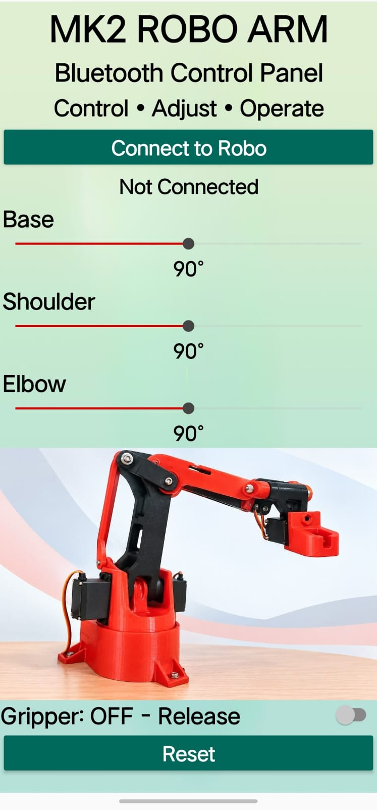
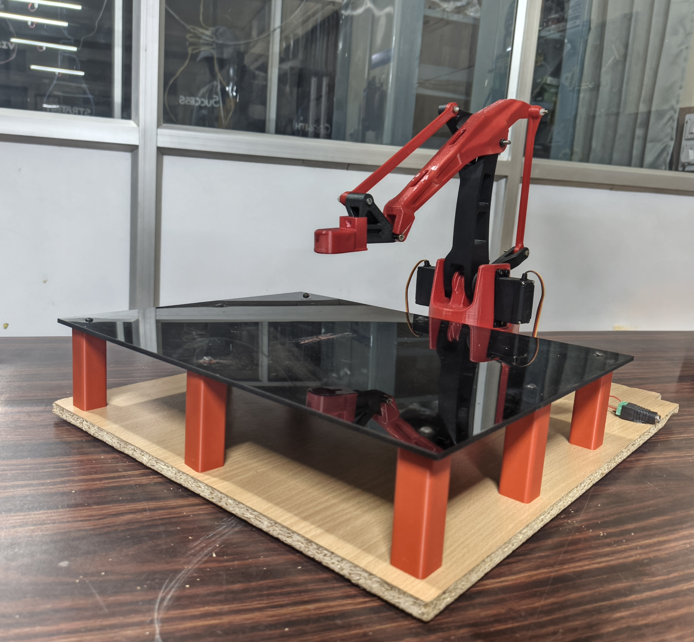

PROJECT 02
Automated Material Handling Robotic Arm
An automated robotic arm designed to pick, move, and place materials between designated locations, demonstrating robotic control, motor actuation, sensing, and automation.


Overview
The robotic arm is operated using a Bluetooth-based control interface developed for the MK2 Robo Arm. The interface allows the user to connect to the robotic arm and control its movements through an easy-to-use control panel.
The application provides individual controls for the Base, Shoulder, and Elbow joints, allowing the position of each joint to be adjusted through slider controls. The current angle of each joint is displayed in the interface for easier operation and monitoring.
The application also provides a Gripper control for releasing or gripping an object and a Reset function to return the system to its initial control state.
Procedure
The user first connects the application to the robotic arm through Bluetooth. Once connected, the Base, Shoulder, and Elbow sliders can be adjusted to control the corresponding motors and position the arm.
The gripper can then be operated using the Gripper control to hold or release materials. By combining the joint controls and gripper operation, the robotic arm can perform pick, move, and place operations.